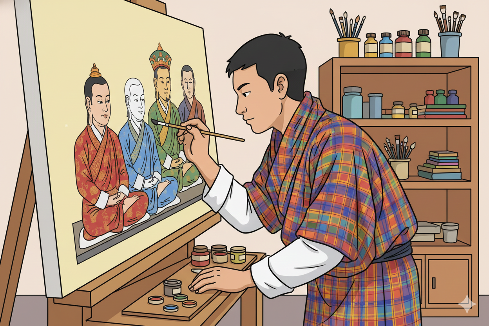

1. Lha Zo: Integrating Aesthetic Discipline with Development 🎨
Bhutanese painting, or Lha Zo, is more than an aesthetic tradition; it is a spiritual and intellectual discipline. Its practice is uniquely positioned within The Royal Academy (TRA)'s curriculum to foster all five areas of student development by demanding precision, patience, intellectual rigor, and profound concentration.
2. Intellectual and Moral Growth through Precision
The foundational principles of Lha Zo directly cultivate the Intellectual and Moral Development of the student by prioritizing canonical accuracy over personal expression.
Links to TRA Pillars:
- Intellectual Development (Geometric Mastery): Students begin by learning the geometric formulae for simple **traditional motifs**. This progressive mastery of line and symmetry strengthens analytical and spatial reasoning, later expanding to the complex grid systems (Thig Thad) required for deities and mandalas.
- Moral Development (Canonical Fidelity): The art demands absolute fidelity to iconography. Students learn that their work is a sacred conduit, not a self-portrait. This promotes humility, respect for tradition, and the moral integrity required to execute a duty for the benefit of others (the viewers/devotees).
- Social Development (Resource Management): The traditional process of grinding mineral pigments and preparing the canvas is collaborative. Students learn to share rare resources, follow hierarchy (master-apprentice), and execute collective tasks efficiently.
3. Practical Student Application and Aesthetic Exploration
TRA students engage in Lha Zo through a structured, multi-stage learning process that ensures practical skill enhancement and reinforces the five developmental areas. They combine rigorous traditional training with exposure to Western artistic principles.
Practical Stages of Learning:
- Initial Drawing Mastery (Traditional Motifs): Students start by drawing simple **geometric patterns**. This sequence develops foundational precision in line work and understanding of proportional balance before moving to complex figurative work.
- Integrating Western Aesthetics: After achieving a base level of skill in Lha Zo line work, students explore Western paintings. They use Western mediums (e.g., acrylics, oils) and techniques (e.g., perspective, chiaroscuro) to paint traditional Bhutanese scenes, contrasting the symbolic, flat Lha Zo style with the naturalistic, three-dimensional Western approach.
- Grinding Pigments & Precision: Students learn to source and manually grind natural minerals (e.g., lapis lazuli for blue) into usable pigments. This exercise instills patience, a deep respect for natural materials, and enhances Physical Development through fine motor skill refinement.
- Color Symbolism and Placement: Students must apply the Five Sacred Colors correctly, understanding the deep philosophical meaning behind each shade (e.g., Yellow symbolizes the earth/foundation). This links the technical act of painting to Spiritual Development.
4. Emotional and Spiritual Depth
Beyond the technical demands, Lha Zo offers profound lessons in self-mastery and inner peace, crucial for Emotional and Spiritual Development.
- Emotional Development (Patience and Persistence): The multi-month process of creating a single thangka teaches the student to manage frustration, embrace incremental progress, and develop immense patience—essential qualities for emotional resilience.
- Spiritual Development (Dedication and Purpose): The final act of "opening the eyes" of the deity (the ritualistic final touch) transforms the image from an object of art into an object of veneration. Students understand their role in creating a sacred space, connecting their personal effort to a higher, spiritual purpose.